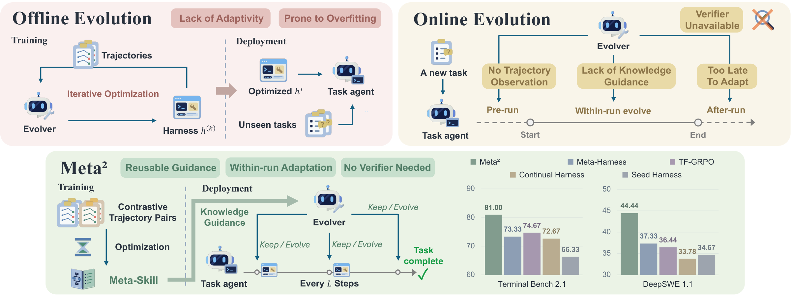
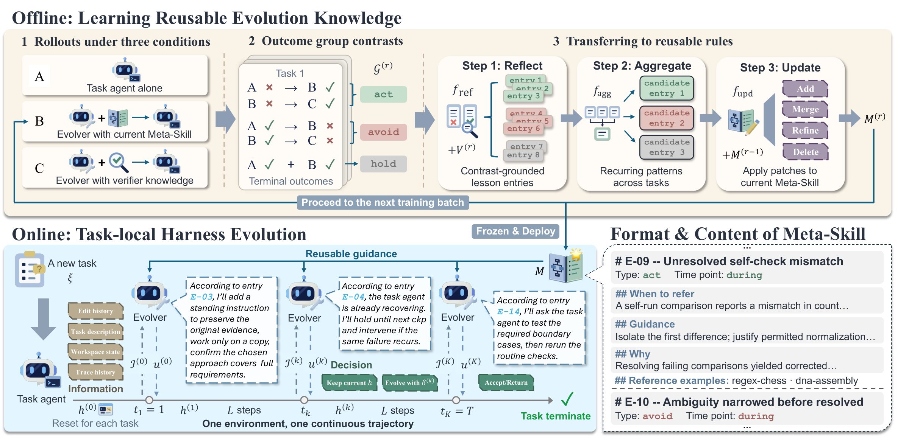
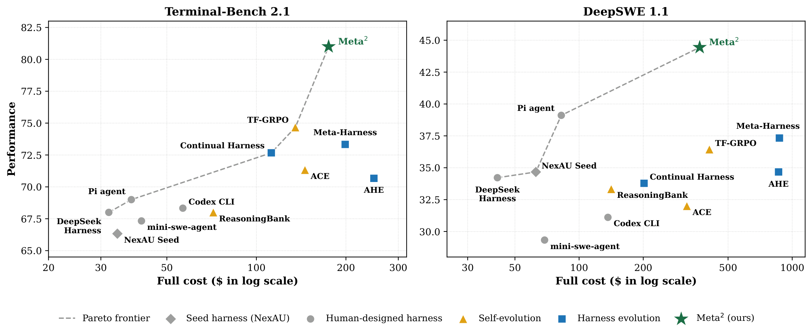
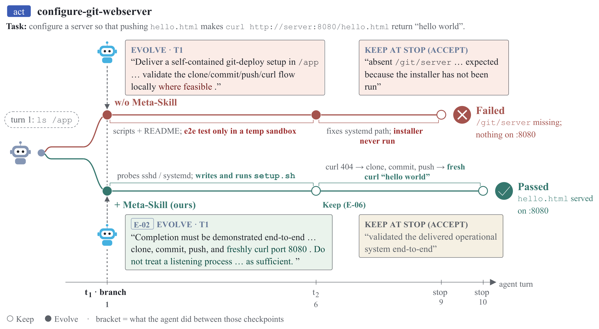
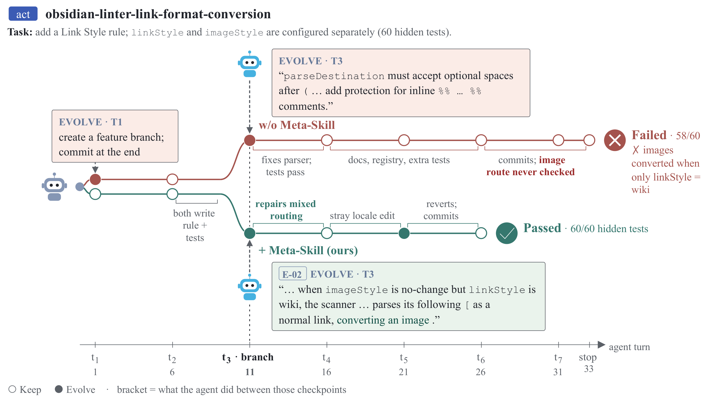
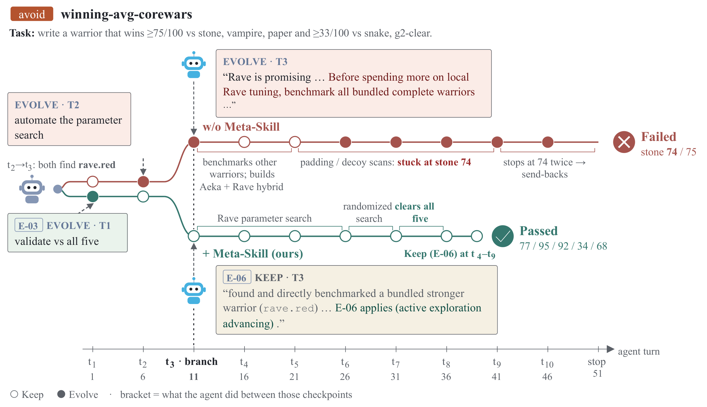
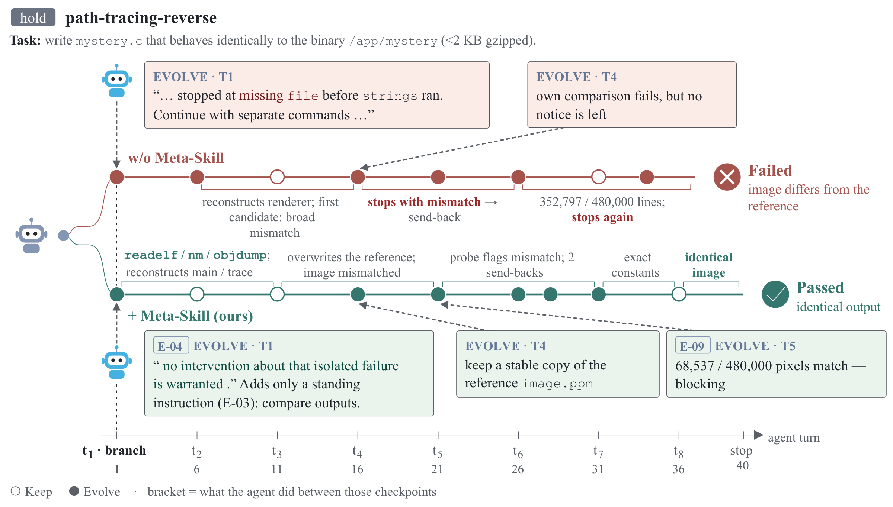

Preprint · 2026Long-horizon agents · Harness evolution · Self-improvement
Meta2
Precomputing Reusable Knowledge for Online Harness Evolution in Long-Horizon Agents
Offline harness optimization ships one shared harness that cannot react to a new run. Online evolution can react, but it reasons about every intervention from scratch. Meta2 moves offline optimization one level up: instead of optimizing the harness, it learns a reusable Meta-Skill that tells an online evolver when and how to edit the harness, and when to leave it alone. Every edit stays local to the run that motivated it.
GPT-5.6-Terra, mean@5
GPT-5.6-Terra, mean@3
01Overview
Precompute how to adapt,
then adapt locally as the task unfolds.
Long-horizon agents act through a harness: prompts, context policy, tools, memory and hooks wrapped around a frozen model. The need to change it often appears during execution. A missing tool shows up when the agent reaches for it; a one-time warning turns out to need a recurring check.
Offline, Meta2 learns a textual Meta-Skill M by contrasting training rollouts of the same task agent under three configurations: (A) no evolver, (B) an evolver guided by the current M, and (C) an evolver given privileged verifier information available only during training. These contrasts are aggregated across tasks into guidance on when to evolve, when to hold, and which interventions to avoid.
Online, an evolver combines the frozen M with emerging trajectory evidence to KEEP the harness or EVOLVE it through a task-local edit. The task agent continues in the same environment with its progress intact, and held-out verifier feedback is never available to the evolver.

- TAXONOMYHarness evolution organized by edit timing, available evidence and executions affected: offline optimization versus pre-run, within-run and after-run online adaptation.
- METHODA hybrid paradigm that moves offline optimization from a shared harness to reusable evolution knowledge, used to guide task-local edits within a run.
- EVIDENCEPerformance, cost, component ablations and checkpoint-frequency sensitivity on two long-horizon benchmarks, plus a second backbone on Terminal-Bench.
02When should a harness evolve?
An evolver g revises the harness from evidence. Methods differ in when the edit is chosen, what evidence it sees, and which executions it affects. Each regime gives up something.
Offline
Pre-run
Within-run
After-run
Meta2
Learn reusable evolution knowledge M from training trajectories and verifier feedback. M is carried across tasks.
Combine M with checkpoint evidence I(k), never the outcome. Each edit δ(k) expires when its run ends.
Central questionHow can lessons from completed training runs guide selective edits during a new run, without held-out verifier feedback, and without letting one task's correction persist into unrelated tasks?
Partial information
At a checkpoint the evolver sees the trajectory, not the verdict. Acting can rescue a failing run, but it can also derail productive work. Sometimes the right move is to do nothing.Coarse supervision
A terminal pass/fail judges a whole sequence of checkpoint decisions at once, not which individual edit helped or harmed.Cost of reasoning from scratch
Deliberating over every evolution decision without prior knowledge adds online tokens, latency and money.03Meta2: optimize the knowledge, not the harness
The model, seed harness h(0), checkpoint interface and edit channels stay fixed. Offline optimization changes only the evolver's reusable knowledge M.

Checkpoint-based harness evolution
A task agent runs from the seed harness. A separate evolver, instantiated from the same frozen model, observes the run every L steps. It receives the newly accumulated trajectory, permitted read-only workspace observations, and whether its previous edit was loaded, retained or rolled back. It then makes one binary decision:
When the agent claims completion, a terminal checkpoint also collects workspace state. KEEP accepts the artifact; EVOLVE applies a bounded correction and sends the agent back for more work.
Precomputing reusable evolution knowledge
A/B/C rollouts make terminal feedback informative. For each training task, the same agent, model and seed harness run under three conditions:
On hard tasks where both A and B fail, C can still produce successes, so B–C contrasts reveal recoveries the current evolver missed. Deterministic pairing of outcomes yields five contrast directions:
These contrasts give each candidate lesson a direction, though they do not establish the causal effect of a single checkpoint decision. Training tasks are processed in batches, and three LLM stages turn contrasts into rules:
Freeze globally, adapt locally
After the final batch, M is frozen. Every run starts from the same seed harness h(0). Online decisions, task-specific edits and outcomes are never written back to M; neither held-out verifier feedback nor an LLM-as-a-judge signal is used to update it.
CARRIED ACROSS TASKS
- The frozen Meta-Skill M
- Guidance on when to act, hold or avoid
DISCARDED AT RUN END
- Every harness edit δ(k)
- The evolver's checkpoint conversation
04Inside the Meta-Skill
The Meta-Skill is plain text: a set of entries that link observable execution conditions to decisions. Below are entries from the Meta-Skill learned on Terminal-Bench 2.1 (abridged).
05Results
Two long-horizon benchmarks, split 1:2 into train/test. Baselines: 5 human-designed harnesses, 3 self-evolution methods and 3 harness-evolution methods. Every evolution method starts from the same NexAU seed harness, and within a backbone setting all agent roles use the same model.
| Method | Group | Perf. (%) | Δ vs seed | Offline $ | Online $ | Full $ |
|---|
Click a column to sort. Costs are aggregate US dollars over each evaluation, computed from per-call charges reported by a single LiteLLM proxy. Offline = one-time construction; Full = offline + online.
Gains over the seed on Terminal-Bench / DeepSWE, versus +7.00 / +2.66 for Meta-Harness, the strongest harness-evolution baseline.
evolution baselines fall below the seed on DeepSWE (ReasoningBank, ACE, Continual Harness), and AHE only matches it. Meta2 keeps a 9.77-point gain, suggesting condition C supplies useful training examples on hard tasks.
with DeepSeek-V4-Flash-0731, again the best, +7.67 over the seed. A separate Meta-Skill is built per backbone, so this tests robustness, not zero-shot transfer.
06Analysis
RQ2Is precomputation cost-effective when reused?
Against the offline harness-evolution methods, Meta2 achieves higher performance at lower full cost on both benchmarks. Compared with Continual Harness, it pays more up front but less online: $64.72 vs $83.48 on Terminal-Bench and $129.34 vs $155.61 on DeepSWE. The Meta-Skill is built once and reused, so later deployments pay only online cost.

RQ3How often should the evolver check in?
A moderate interval of L = 5 achieves the highest performance (81.00%) and the best observed performance–cost balance.
More frequent checkpoints cost more without helping: L = 3 and L = 1 cost $74.22 and $83.41 but score 80.33% and 79.00%. Longer intervals save a little (down to $59.10 at L = 11) but performance drops.
Across every evaluated L, Meta2 outperforms every baseline, so its advantage does not depend on the checkpoint schedule.
RQ4Which components produce the gains?
Adding an online evolver helps on both benchmarks. A self-distilled Meta-Skill helps on Terminal-Bench but slightly hurts DeepSWE. Contrastive Meta-Skill learning improves over self-distillation by 4.00 and 8.88 points respectively, with the largest gain on the harder benchmark.
07Case studies
Each case compares two runs of the same task with the same model, seed harness and checkpoint schedule: one evolver without a Meta-Skill and one guided by the learned Meta-Skill. Together they cover all three entry types.

hello.html to a web server on port 8080. Without the Meta-Skill, the evolver asks for validation only "where feasible"; the agent tests in a temporary sandbox and never runs the installer, yet the result is accepted. With the Meta-Skill, entry E-02 requires end-to-end evidence: clone, commit, push, then a fresh request that returns "hello world". The agent installs the service and verifies it, and the evolver keeps the harness thereafter. Failed → Passed.
linkStyle and imageStyle. At t3 both evolvers issue a notice. Without the Meta-Skill it targets parser issues from failing tests and leaves the image route unchecked, so images are wrongly converted. 58/60 hidden tests pass. With the Meta-Skill, E-02 directs attention to the unverified execution route; the evolver finds the link/image parsing interaction and the agent repairs it. 60/60.

file is unavailable, and the agent switches tools. Without the Meta-Skill, the evolver spends notices at t1 and t2, exhausting the channel before a substantial output mismatch appears. With the Meta-Skill, E-04 discourages a notice about the isolated tool failure, while an instruction guided by E-03 requires output comparison. Notices remain for t4–t5, and the agent reproduces the reference output. This illustrates a difference in timing rather than proving that withholding the notice decides success.08Takeaways
Move offline optimization one level up
Learn reusable knowledge about how to evolve a harness rather than a single shared harness. The same knowledge supports different edits in different runs.
Contrasts beat successes
A/B/C rollouts turn coarse terminal outcomes into directional act / avoid / hold evidence, including recoveries found only with training-time verifier help.
Keep edits task-local
Freeze the Meta-Skill, reset the harness for every task. Carrying edits forward costs 2.67 and 5.33 points on the two benchmarks.
Precompute how to adapt, then adapt locally as the task unfolds.
09Cite
@misc{yuan2026meta2,
title = {Meta$^2$: Precomputing Reusable Knowledge for Online Harness
Evolution in Long-Horizon Agents},
author = {Yuan, Lingzhi and Cai, Yiguang and Liu, Weize and Yang, Siqi and
Han, Feijiang and Lee, Yongkyun and Sehwag, Udari Madhushani and
Huang, Furong},
year = {2026},
note = {Preprint},
url = {https://meta-square.github.io/}
}